1单选难度 ⭐⭐约 6 分钟
足够长的水平传送带以恒定速率 $v$ 顺时针运动，某时刻一质量 $m$ 的小物块以大小也是 $v$、方向与传送带相反的初速度冲上传送带，最终速度与传送带相同。在相对运动过程中，滑动摩擦力对小物块做功为 $W$，摩擦生热为 $Q$，则（ ）
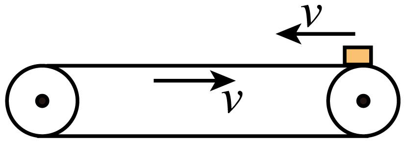
A. $W=0,\ Q=mv^2$B. $W=0,\ Q=2mv^2$
C. $W=\dfrac{mv^2}{2},\ Q=mv^2$D. $W=mv^2,\ Q=2mv^2$
💡 显示答案与解析
【答案】B 【难度】0.65
对物块，动能定理：$W=\dfrac12mv^2-\dfrac12mv^2=0$。
向左减速阶段相对路程 $x_1=\dfrac{v}{2}t+vt=\dfrac32vt$；向右加速阶段 $x_2=vt-\dfrac{v}{2}t=\dfrac{v}{2}t$；$t=\dfrac{v}{\mu g}$，故 $x_{相对}=x_1+x_2=\dfrac{2v^2}{\mu g}$。
$Q=\mu mgx_{相对}=2mv^2$。故选 B。
2单选难度 ⭐⭐约 6 分钟
水平传送带长为 $x$，以速度 $v$ 匀速运动，把质量 $m$ 的货物放到 $A$ 点，货物与皮带间动摩擦因数为 $\mu$。从 $A$ 到 $B$ 过程中，摩擦力对货物做的功不可能（ ）
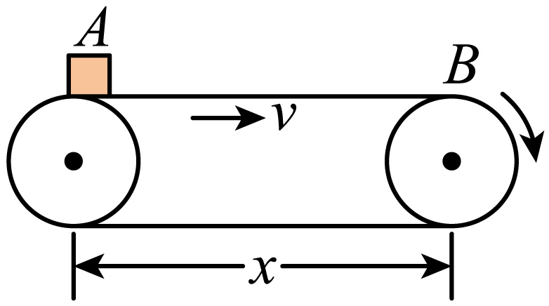
A. 等于 $\dfrac12mv^2$B. 小于 $\dfrac12mv^2$
C. 大于 $\mu mgx$D. 小于 $\mu mgx$
💡 显示答案与解析
【答案】C 【难度】0.65
无初速放上后受向前滑动摩擦做加速。若未到 $B$ 已共速，则匀速段摩擦为零，做功 $W_f=\dfrac12mv^2$，且加速位移 $<x$ 故 $W_f<\mu mgx$，A、D 正确。
若到 $B$ 仍未共速，摩擦作用位移为 $x$，$W_f=\mu mgx<\dfrac12mv^2$，B 正确。综上不可能大于 $\mu mgx$，C 错误。
3多选难度 ⭐⭐约 7 分钟
质量 $m$ 的物体在水平传送带上由静止释放，传送带保持 $v$ 匀速，物体最终与带相对静止。对从静止到相对静止过程，正确的是
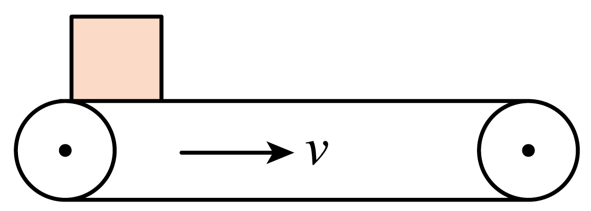
A. 电动机多做的功为 $\dfrac12mv^2$B. 划痕长 $\dfrac{v^2}{2\mu g}$
C. 传送带克服摩擦力做功 $\dfrac12mv^2$D. 电动机增加功率 $\mu mgv$
💡 显示答案与解析
【答案】BD 【难度】0.65
A：电动机多做功转化为动能+内能，必大于 $\dfrac12mv^2$，错。
B：达速时间 $t=\dfrac{v}{\mu g}$，物块位移 $x_1=\dfrac{v^2}{2\mu g}$，带位移 $x_2=vt=\dfrac{v^2}{\mu g}$，划痕（相对位移）$x=x_2-x_1=\dfrac{v^2}{2\mu g}$，对。
C：传送带克服摩擦做功即电动机多做功，由 A 知错；D：增加功率 $P=fv=\mu mgv$，对。故选 BD。
4解答难度 ⭐⭐⭐⭐约 12 分钟
水平传送带 $v=4\ \text{m/s}$ 向右，与倾角 $37^\circ$ 斜面底端 $P$ 平滑连接。质量 $m=2\ \text{kg}$ 物块从 $A$ 静止释放，$AP$ 距离 $L=8\ \text{m}$，物块与斜面、传送带间 $\mu_1=0.25,\ \mu_2=0.20$，$g=10\ \text{m/s}^2$，$\sin37^\circ=0.6,\ \cos37^\circ=0.8$。求：(1) 第一次滑过 $P$ 的速度 $v_1$；(2) 第一次在传送带上往返时间 $t$；(3) 最终停止后与斜面摩擦生热 $Q$。
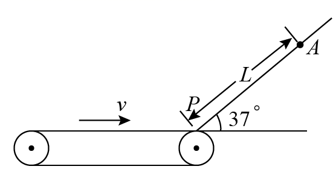
💡 显示答案与解析
【答案】(1) $8\ \text{m/s}$ (2) $9\ \text{s}$ (3) $48\ \text{J}$ 【难度】0.15
(1) 斜面段动能定理：$(mg\sin37^\circ-\mu_1mg\cos37^\circ)L=\dfrac12mv_1^2$，得 $v_1=8\ \text{m/s}$。
(2) 传送带上 $\mu_2mg=ma$，共速：$-v=v_1-at_1\Rightarrow t_1=6\ \text{s}$；匀速段 $t_2=\dfrac{v_1^2/(2a)-v^2/(2a)}{v}=3\ \text{s}$；$t=t_1+t_2=9\ \text{s}$。
(3) 每次离开/回到传送带速度相等，最终停在 $P$，能量守恒：$Q=\mu_1mg\cos37^\circ\cdot L+\dfrac12mv^2=48\ \text{J}$。
5单选难度 ⭐⭐约 6 分钟
传送带以 $v_0$ 匀速，物体无初速放 $A$ 端，到 $B$ 前已相对静止。正确的是
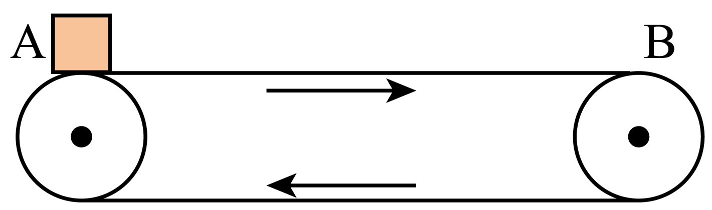
A. 传送带动物体做功 $\dfrac12mv_0^2$B. 传送带克服摩擦做功 $\dfrac12mv_0^2$
C. 电动机多耗能量 $\dfrac12mv_0^2$D. 产生热量 $\dfrac12mv_0^2$
💡 显示答案与解析
【答案】AD 【难度】0.65
A：动能定理，传送带动物体功=动能增量 $\dfrac12mv_0^2$，对。
B：带位移>物位移，带克服摩擦功>$\dfrac12mv_0^2$，错；C：电动机多耗=动能+内能>，错。
D：热量 $Q=f\Delta x_{相}$，加速时间 $t$，物位移 $x_1=\dfrac12v_0t$、带位移 $x_2=v_0t$，$fx_1=\dfrac12mv_0^2\Rightarrow Q=\dfrac12mv_0^2$，对。故选 AD。
6多选难度 ⭐⭐约 8 分钟
足够长水平传送带以 $v_1$ 向右，质量 $m$ 滑块从右端以 $v_2\,(v_2>v_1)$ 向左滑上，最终返回右端。判断正确的有（ ）
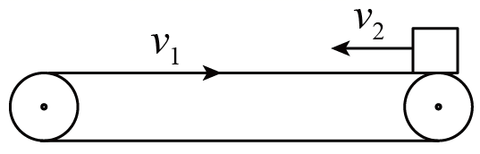
A. 返回右端速率 $v_1$B. 带对滑块功 $\dfrac12mv_1^2-\dfrac12mv_2^2$
C. 电动机多做功同 BD. 摩擦生热 $\dfrac12m(v_1+v_2)^2$
💡 显示答案与解析
【答案】ABD 【难度】0.65
A：先向左减速到 0，再向右加速到 $v_1$ 后匀速，返回速率 $v_1$，对。
B：动能定理，带对滑块功=动能变化 $\dfrac12mv_1^2-\dfrac12mv_2^2$，对；D：以带为参考，滑块初相对速 $v_1+v_2$ 向左匀减速，$Q=\mu mg\cdot\dfrac{(v_1+v_2)^2}{2\mu g}=\dfrac12m(v_1+v_2)^2$，对。
C：电动机多做功=热量+滑块动能增量 $=mv_1^2+mv_1v_2\neq$B，错。故选 ABD。
7单选难度 ⭐⭐约 7 分钟
甲、乙两种粗糙面不同的倾斜传送带，以同样速率 $v$ 向上运动。将质量 $m$ 物体轻放 $A$ 处：甲上到 $B$ 恰达 $v$，乙上到离 $B$ 竖直高 $h$ 的 $C$ 处达 $v$。$B$ 离地高均为 $H$。从 $A$ 到 $B$ 过程，正确的是（ ）
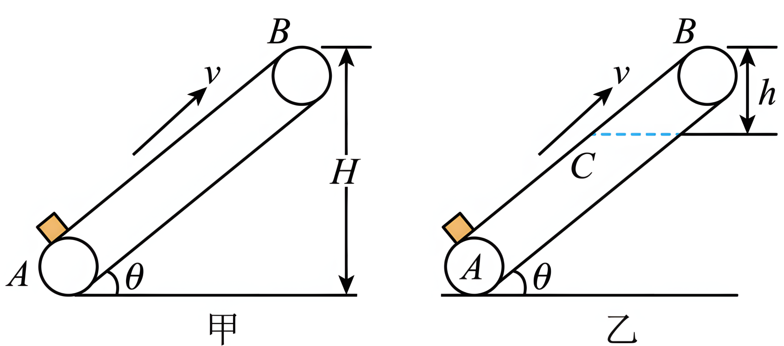
A. 两带动摩擦因数相同B. 传送到 $B$ 耗电能相等
C. 两带对物体做功相等D. 两系统生热相等
💡 显示答案与解析
【答案】C 【难度】0.55
A：均初速 0 匀加速，$a=\mu g\cos\theta-mg\sin\theta$，甲位移大由 $v^2=2ax$ 知甲 $a$ 小，$\mu$ 小，错。
C：带对物体功=机械能增量（动能+势能均相等），故相等，对。
D：$Q=\mu mg\cos\theta\cdot x_{相对}$，$x_{相对}=vt-\dfrac{v^2}{2a}$，甲 $\mu$ 小、$a$ 小，生热多，错；B：耗电能=机械能增量+生热，不相等，错。故选 C。
8解答难度 ⭐⭐约 9 分钟
$\theta=30^\circ$ 倾斜传送带绷紧，$AB$ 间距 $L=4\ \text{m}$，以 $v=2\ \text{m/s}$ 向上。质量 $1\ \text{kg}$ 物体无初速放 $A$，$\mu=\dfrac{\sqrt3}{2}$，$g=10$。求：(1) 从 $A$ 到 $B$ 时间；(2) 电动机多耗电能。
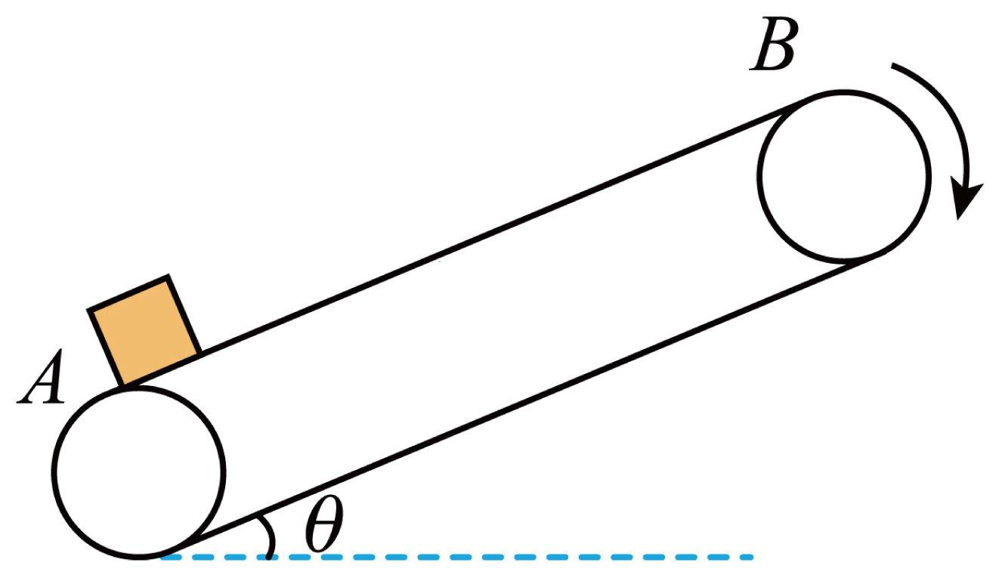
💡 显示答案与解析
【答案】(1) $t=2.4\ \text{s}$ (2) $E_{电}=28\ \text{J}$ 【难度】0.65
(1) $mg\sin\theta<\mu mg\cos\theta$，向上匀加速：$a=\dfrac{\mu mg\cos\theta-mg\sin\theta}{m}=2.5\ \text{m/s}^2$；$t_1=\dfrac{v}{a}=0.8\ \text{s}$，$L_1=\dfrac{v}{2}t_1=0.8\ \text{m}$；$t_2=\dfrac{L-L_1}{v}=1.6\ \text{s}$；$t=2.4\ \text{s}$。
(2) 前 $0.8\ \text{s}$ 相对位移 $\Delta L=vt_1-L_1=0.8\ \text{m}$，内能 $E_{内}=\mu mg\cos\theta\cdot\Delta L=6\ \text{J}$；$E_{电}=E_k+E_p+E_{内}=\dfrac12mv^2+mgL\sin\theta+E_{内}=28\ \text{J}$。
9解答难度 ⭐⭐约 10 分钟
仓库用皮带将货物由平台 $D$ 运到高 $h=2.5\ \text{m}$ 的平台 $C$。$D$ 与皮带间放 $\frac14$ 圆光滑轨道 $ab$，$R=0.8\ \text{m}$，最低点与皮带平滑连接。皮带倾角 $\theta=37^\circ$，$\mu=0.75$，以 $v_0=1\ \text{m/s}$ 顺时针。$m=200\ \text{kg}$ 货物由 $a$ 静止释放（$g=10$，$\sin37^\circ=0.6,\cos37^\circ=0.8$）。求：(1) 最低点 $b$ 对轨道压力；(2) 沿皮带上滑多远相对静止；(3) 皮带对货物做功。
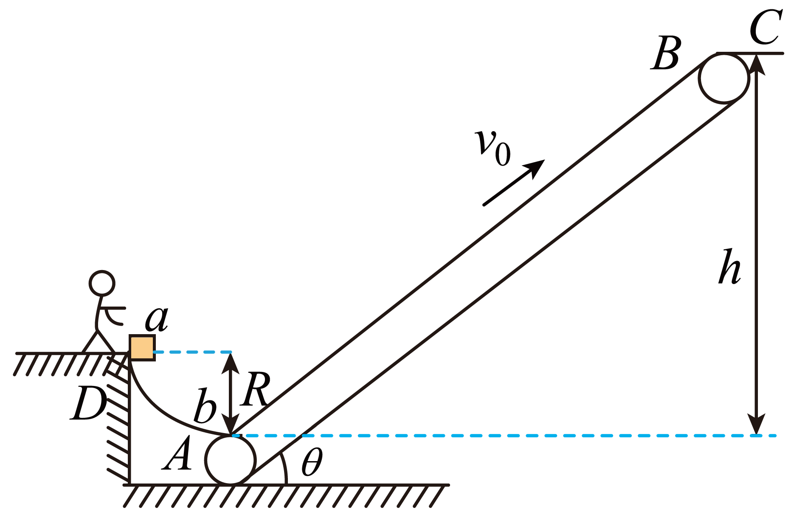
💡 显示答案与解析
【答案】(1) $6000\ \text{N}$ (2) $x=0.625\ \text{m}$ (3) $W=3500\ \text{J}$ 【难度】0.65
(1) $a\to b$ 机械能守恒 $mgR=\dfrac12mv^2\Rightarrow v=4\ \text{m/s}$；$b$ 点 $F-mg=m\dfrac{v^2}{R}\Rightarrow F=6000\ \text{N}$，由牛顿第三定律压力 $6000\ \text{N}$。
(2) 上滑减速：$(-\mu mg\cos37^\circ-mg\sin37^\circ)x=\dfrac12mv_0^2-\dfrac12mv^2\Rightarrow x=0.625\ \text{m}$。
(3) $\mu=\tan\theta$，达最大位移后随带匀速，静摩擦=滑动摩擦。位移内 $W_1=-\mu mgx\cos37^\circ=-750\ \text{J}$；匀速上升高 $h_1=h-x\sin37^\circ=2.125\ \text{m}$，$W_2=mgh_1=4250\ \text{J}$；$W=W_1+W_2=3500\ \text{J}$。
10解答难度 ⭐⭐⭐约 10 分钟
皮带装置 $AB$ 水平长 $L_{AB}=4\ \text{m}$，$BC$ 倾斜足够长 $\theta=37^\circ$，以 $v=4\ \text{m/s}$ 顺时针。质量 $1\ \text{kg}$ 工件无初速放 $A$，$\mu=0.5$。求：(1) 第一次到 $B$ 时间 $t$；(2) 第一次到 $B$ 至第二次到 $B$ 摩擦生热 $Q$。
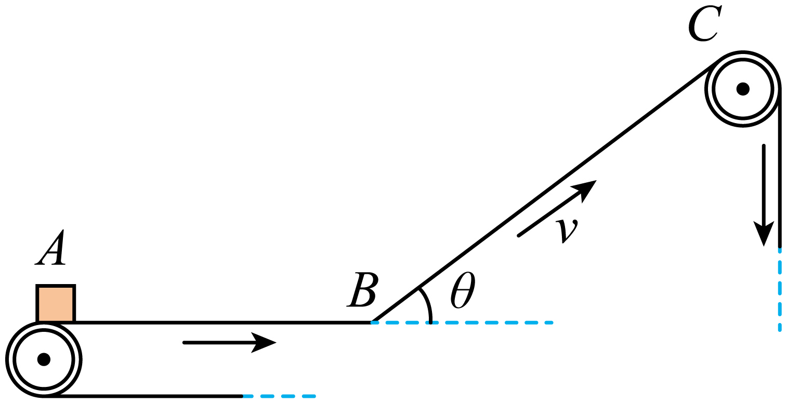
💡 显示答案与解析
【答案】(1) $1.4\ \text{s}$ (2) $64\ \text{J}$ 【难度】0.4
(1) 水平段 $a_1=\mu g=5\ \text{m/s}^2$，$t_1=\dfrac{v}{a_1}=0.8\ \text{s}$，位移 $x=\dfrac12a_1t_1^2=1.6\ \text{m}$；匀速到 $B$ 用时 $t_2=\dfrac{L_{AB}-x}{v}=0.6\ \text{s}$；$t=1.4\ \text{s}$。
(2) 上升 $a_2=g\sin37^\circ-\mu g\cos37^\circ=2\ \text{m/s}^2$，上升 $t_3=\dfrac{v}{a_2}=2\ \text{s}$，下降同 $t_4=2\ \text{s}$；相对路程 $\Delta x=v(t_3+t_4)=16\ \text{m}$；$Q=\mu mg\cos37^\circ\cdot\Delta x=64\ \text{J}$。
11解答难度 ⭐⭐约 10 分钟
质量 $2\ \text{kg}$ 滑块从 $R=0.2\ \text{m}$ 光滑 $\frac14$ 圆弧顶端 $A$ 静止滑下，$B$ 与水平传送带平滑相接。带速 $v_0=4\ \text{m/s}$，$BC$ 距 $L=2\ \text{m}$，滑到右端 $C$ 时速度恰与带相同（$g=10$）。求：(1) 底端 $B$ 对轨道压力；(2) $\mu$；(3) 摩擦生热 $Q$。
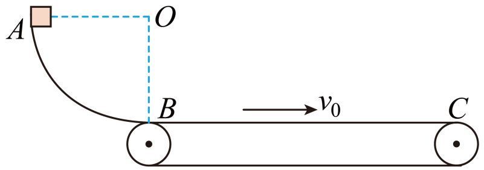
💡 显示答案与解析
【答案】(1) $60\ \text{N}$ 竖直向下 (2) $0.3$ (3) $4\ \text{J}$ 【难度】0.65
(1) $mgR=\dfrac12mv_B^2$，$F_B-mg=m\dfrac{v_B^2}{R}\Rightarrow F_B=60\ \text{N}$，由第三定律压力 $60\ \text{N}$ 竖直向下。
(2) $A\to C$ 动能定理 $mgR-\mu mgL=-\dfrac12mv_0^2\Rightarrow \mu=0.3$。
(3) 运动时间 $t$，由 $v_0=v_B+at$ 及 $Q=\mu mg(v_0t-L)$ 得 $Q=4\ \text{J}$。
12解答难度 ⭐⭐⭐约 11 分钟
水平面上方固定水平运输带，左端 $A$ 用光滑圆弧与光滑斜面衔接，带以 $v_0=2\ \text{m/s}$ 向左。质量 $2\ \text{kg}$ 滑块由 $O$ 无初速释放，经 $A$ 滑上带，从右端 $B$ 离开落 $C$。$OH_1=1.65\ \text{m}$，$AH_2=0.8\ \text{m}$，$BC$ 水平距 $x=1.2\ \text{m}$，$g=10$。求：(1) 到 $C$ 速度；(2) 仅将 $H_1'$ 改为 $0.8\ \text{m}$ 且到 $A$ 时撤斜面，落水平面速度；(3) 第(2)问全过程中摩擦生热 $Q$。
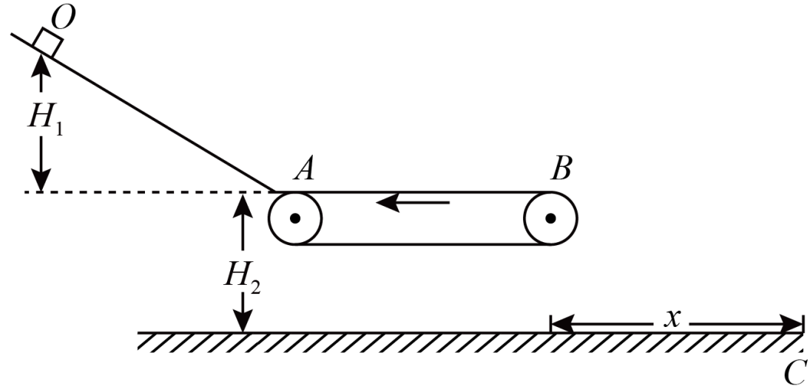
💡 显示答案与解析
【答案】(1) $v=5\ \text{m/s}$ (2) $v_2=2\sqrt5\ \text{m/s}$ (3) $Q=36\ \text{J}$ 【难度】0.4
(1) 飞出水平 $x=v_1t$，竖直 $H_2=\dfrac12gt^2$，机械能守恒 $\dfrac12mv_1^2+mgH_2=\dfrac12mv^2$，得 $v_1=3\ \text{m/s},\ v=5\ \text{m/s}$。
(2) 由 $mgH_1-W_f=\dfrac12mv_1^2\Rightarrow W_f=24\ \text{J}$；因 $mgH_1'<W_f$，滑块到带速减为零后向左运动。由 $mgH_1'=\dfrac12m{v_0'}^2\Rightarrow v_0'=4\ \text{m/s}>v_0$，先加速到 $v_0$ 后平抛：$\dfrac12mv_0^2+mgH_2=\dfrac12mv_2^2\Rightarrow v_2=2\sqrt5\ \text{m/s}$。
(3) 设 $\mu$，左滑段 $Q_1=\mu mg(\dfrac{v_0'}{2}t_1+v_0t_1)$，对滑块 $-\mu mg\dfrac{v_0'}{2}t_1=0-\dfrac12m{v_0'}^2$；右滑段 $Q_2=\mu mg(v_0t_2-\dfrac{v_0}{2}t_2)$，$\mu mg\dfrac{v_0}{2}t_2=\dfrac12mv_0^2$；$Q=Q_1+Q_2=36\ \text{J}$。